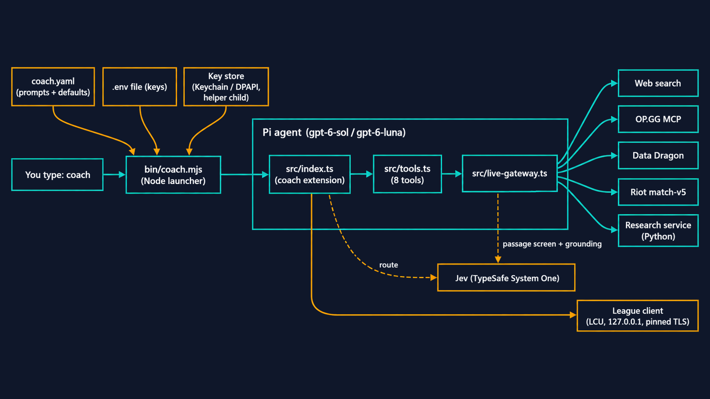
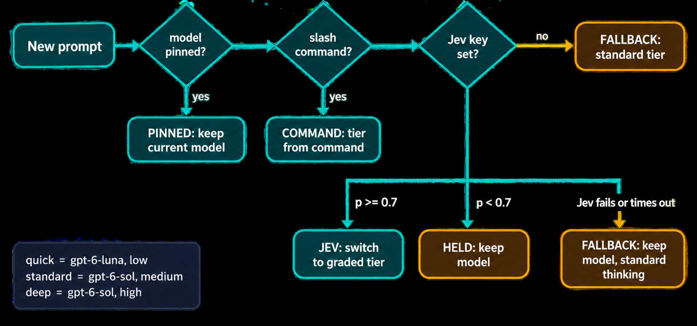
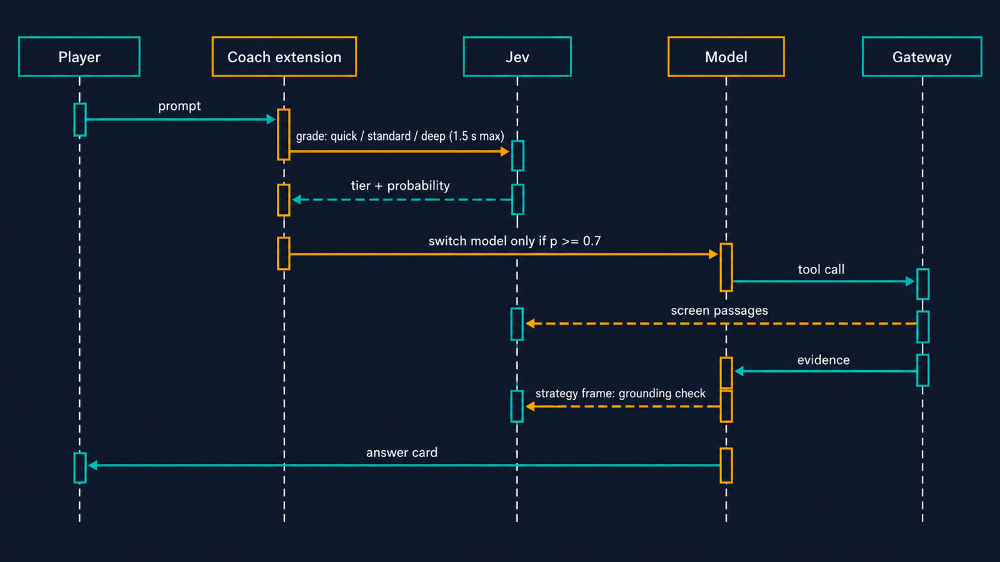
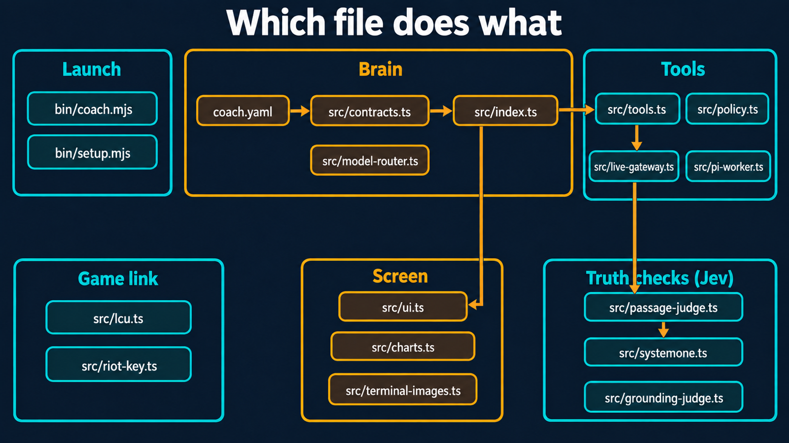

You type coach. Eight steps later a League coach answers in your terminal. Each step has a plain version first, then the deeper details for when you want them.

coachNode runs bin/coach.mjs. It gathers your settings and keys, sets up a private folder, then starts Pi, the AI agent framework, with the coach plugged in. Node waits until Pi exits.
.env file. Perplexity, TypeSafe and Gemini keys fall back to the OS key store (macOS Keychain or Windows DPAPI), read through a helper child process with a 3 s timeout, so a locked Keychain never hangs launch.FORWARDED_ENV) decides which variables reach Pi. Everything else in your environment stays out.HOME under the coach home (~/Library/Application Support/voxren-coach on macOS), so your personal Pi config never leaks in.--no-extensions --extension src/index.ts --no-builtin-tools --no-skills. The coach is the only plugin, and Pi's coding tools are off.Pi is generic. src/index.ts turns it into a League coach: it adds 8 tools, the slash commands, a header and a footer, and listens for events like "a turn is starting" or "a tool just finished".
session_start: starts the League client poller (every 5 s, every 2 s in champ select) and warms up the research service.before_agent_start: starts a turn timer (180 s default), routes the model, and adds your learnings summary to the prompt.tool_call: blocks any tool not on the exact list. model_select: picking a model that isn't approved aborts and shuts the session down.user_bash: shell commands are always denied. It's a coach, not a coding agent.Easy questions go to a fast model. Hard ones get a stronger model that thinks longer. A judge called Jev grades each prompt as quick, standard or deep, and code (never the prompt) makes the final call.

setTimeout, never an unref'd timer. On Windows, Bun never fires a lone unref'd timer, so the race would hang (rule 8 in AGENTS.md).context event strips that row from every request, so the model never sees it.A slash command is a ready-made question with a fixed tier. Tools are what the model can reach for while answering: search, game data, your match history.
| Command | Tier | What it does |
|---|---|---|
/review | deep | Audit your last ranked games and name the top 3 habits to fix |
/otp | deep | Read a one-trick's recent games and lay out the build to copy |
/matchup | standard | Lane plan for a matchup |
/build | standard | Build, runes and skill order for this patch |
/patch | standard | What changed this patch, and whether it changes how you play |
/comp | standard | Read the current draft or game and get a strategy call |
/draft | quick | Your call for the current draft, in four short rows |
/pick | quick | The pick call for your hovered or locked champion |
/config, /riot-key | none | Settings panel and Riot key setup, with no model call |
Tools: web_search, voxren_game_facts, voxren_meta_research, voxren_strategy_frame, voxren_player_audit, voxren_otp_build, voxren_remember, voxren_video_research.
src/lcu.ts finds the client's lockfile, then makes HTTPS calls to 127.0.0.1 that are pinned to Riot's root certificate in data/riotgames.pem.VOXREN_COACH_AUTO_COMP=0: /pick fires when your champion is locked or has stayed hovered for two polls, and /draft when you and four enemies have locked in. Together they fire at most 5 times per champ select, and only while the coach is idle.coach.yaml. No prompt text is allowed in a .ts file.The model asks tools for evidence and reads what comes back, then answers. Jev checks the sources on the way in and the claims on the way out.

TYPESAFE_API_KEY is unset. Steps 5 to 7 can repeat several times in one turn.src/passage-judge.ts) scores web results, video transcripts and OP.GG summaries before the model sees them.src/grounding-judge.ts) sits behind voxren_strategy_frame. It checks each claim against the cited passage text. It flags unsupported claims and never deletes them.src/policy.ts caps sizes: 12 KB per gateway payload, 8 KB of display text, 64 KB per chart. Bad input fails with a typed SafeToolError, and terminal escape codes are stripped.The first time you look up a matchup, the coach starts writing a study note on it in the background. The next time, the note is ready.
<coach home>/matchups/<champion>-<opponent>.json.voxren_meta_research returns a finished note next to the OP.GG rows, under its own guide-N evidence id.Answers arrive as cards. Each block has a coloured bar and a short upper-case label. A call that's still running shows a spinner and a clock.
src/ui.ts handles presentation only. src/terminal-images.ts is the one file allowed to draw pictures. It rasterizes SVG charts with resvg and draws them with the Kitty or iTerm2 image protocol. Sixel is opt-in.Each turn is logged. When the coach audits your games, it remembers your habits and brings them up next time.
<coach home>/exchanges.ndjson: the prompt, every tool call with timing, the answer, tokens and cost. The lab scripts read this file.voxren_player_audit, results are folded into a learnings file for your account, for example deaths before minute 6 or being ahead at 15 and then dying. A summary of up to 400 characters goes into the next prompt. You can turn this off in /config.session_shutdown stops the pollers and closes the gateway, including the research service it started.
coach.yaml sits in the Brain group because it holds every prompt. Tests live next to the file they test.TYPESAFE_API_KEY is set.